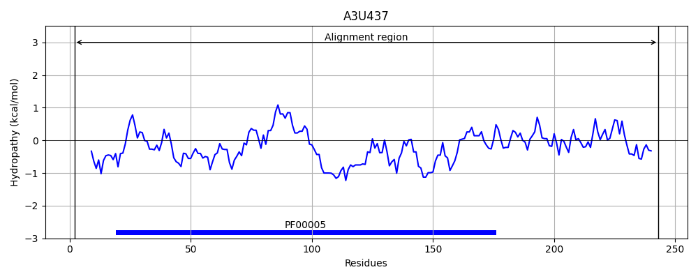
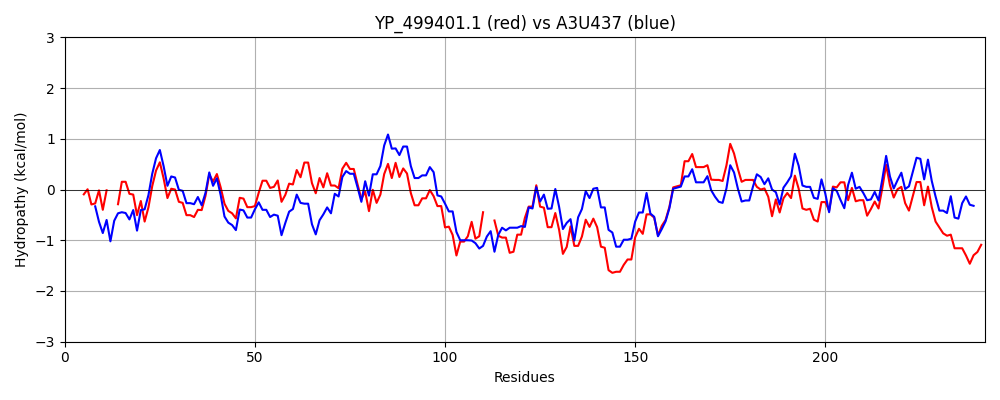

Hit Accession: A3U437
Hit TCID: 9.B.29.2.12
Hit Description: gnl|BL_ORD_ID|365 gnl|TC-DB|A3U437|9.B.29.2.12 Suf C, ATPase OS=Pseudooceanicola batsensis (strain ATCC BAA-863 / DSM 15984 / KCTC 12145 / HTCC2597) OX=252305 GN=OB2597_03564 PE=4 SV=1
Mach Len: 242
e:0.000000
Query TMS Count : 0
Hit TMS Count: 0
TMS-Overlap Score: 0.000000
Predicted Substrates:None
BLAST Alignment:
Score: 678 , Bit scores: 265 bits, E-value: 7.3e-90, Alignment length: 242, Percentage identity: 55
Query: 5 LEIKDLHVSIED--KEILKGVNLTINTDEIHAIMGPNGTGKSTLSSAIMGHPSYEVTKGEVLLDGVNILELEVDERAKAGLFLAMQYPSEITGVTNADFMRSAINAKREEG--QEINLMQFIKKLDKNMDFLDIDKDMAQRYLNEGFSGGEKKRNEILQLMMLEPKFAILDEIDSGLDIDALKVVSKGINQMRGENFGALMITHYQRLLNYITPDKVHVMYAGKVVKSGGPELAKRLEEEGY 242
L IK+LHV +ED K+ILKGV+LT+ ++HAIMGPNG+GKSTLS + G YEVT G L+G+++L+++ +ERA AGLFLA QYP EI GV N F+R+A+NA+R+ E++ F+K + + L ID DM +R +N GFSGGEKKRNEILQ+ +L+P+ ILDE DSGLD+DA+K+VS G+N +R G L+ITHYQRLL++I PD VH+M G++VK+GGPELA +E+ GY
Sbjct: 2 LTIKNLHVKLEDEDKQILKGVDLTVEAGKVHAIMGPNGSGKSTLSYVLSGREGYEVTDGSAELEGLDLLDMDPEERAAAGLFLAFQYPVEIPGVGNMTFLRTALNAQRKARGEDEMSAADFLKFIREKAKTLKIDADMLKRPVNVGFSGGEKKRNEILQMAVLQPRMCILDETDSGLDVDAMKLVSDGVNALRDAGRGFLVITHYQRLLDHIRPDVVHIMAGGRIVKTGGPELALEVEKNGY 243 | Protein Hydropathy Plots: |
|---|
 |  |
Pairwise Alignment-Hydropathy Plot:
|
|---|
|  |